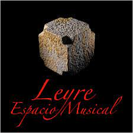

|
¡Buenos días, invitad@¡
Le damos la bienvenida al fantástico mundo del Monasterio de Leyre.
Nos presentamos en calidad de estudiantes de un instituto
de educación secundaria de bachillerato que han abordado una actividad
enfocada en detallar este monasterio en forma de página web.
Para ello, hemos unido conocimientos entre un estudiante de Historia del Arte
y un estudiante de Tecnologías de la Información y de la
Comunicación.
Esperamos fervientemente que le sea útil esta página web con miras a la ampliación
de su conocimiento histórico, arquitectónico y de arte.
Atte, estudiantes del I.E.S Sierra de las Villas de Villacarrillo.
|

|